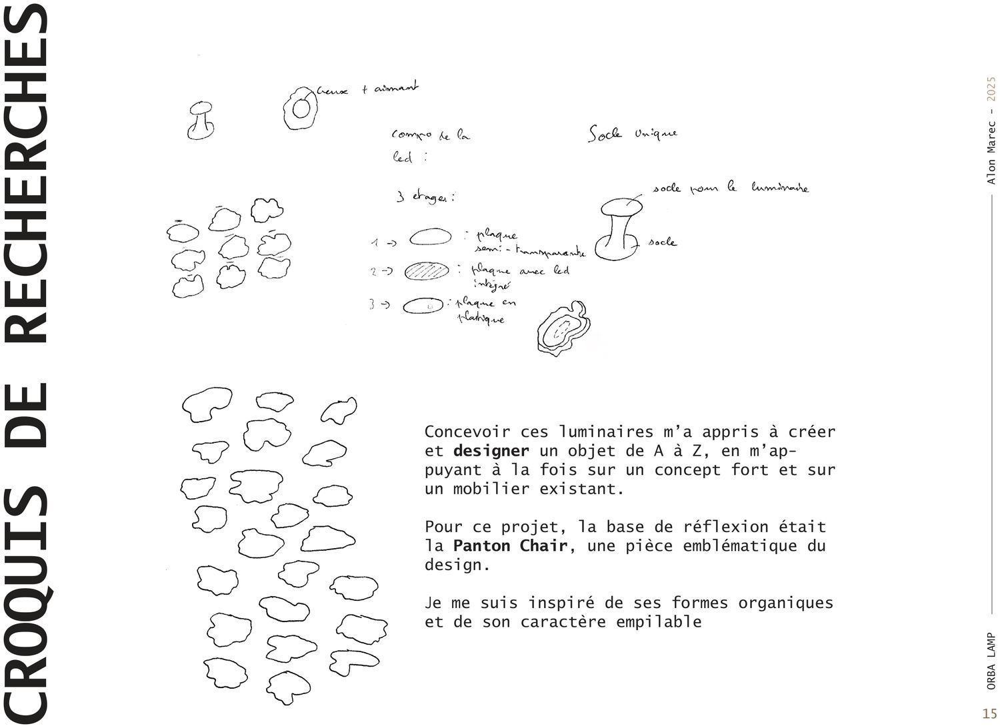
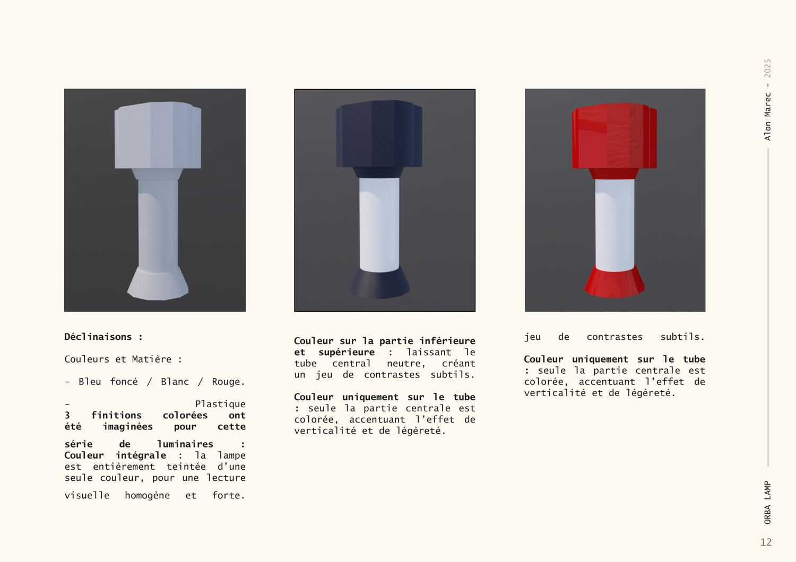
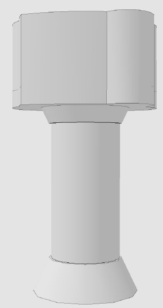
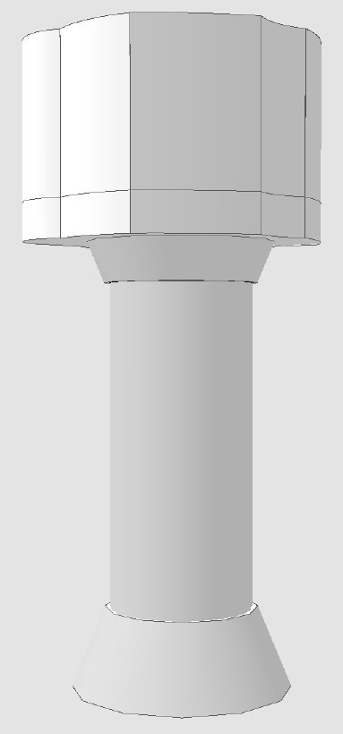
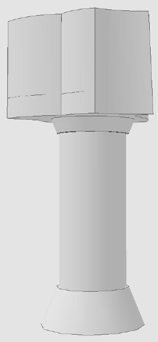
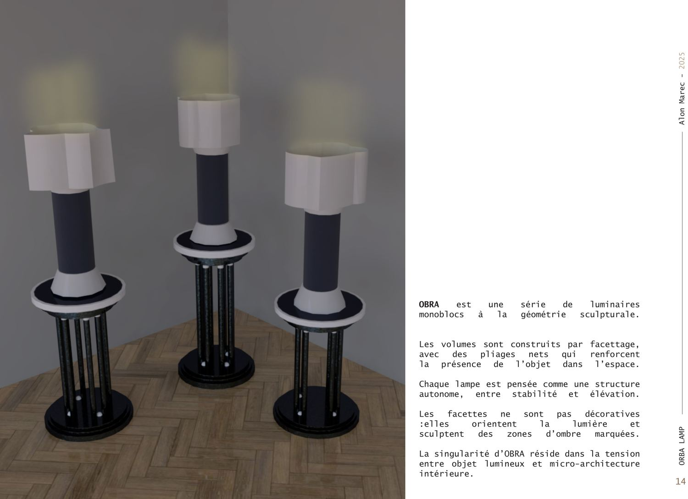
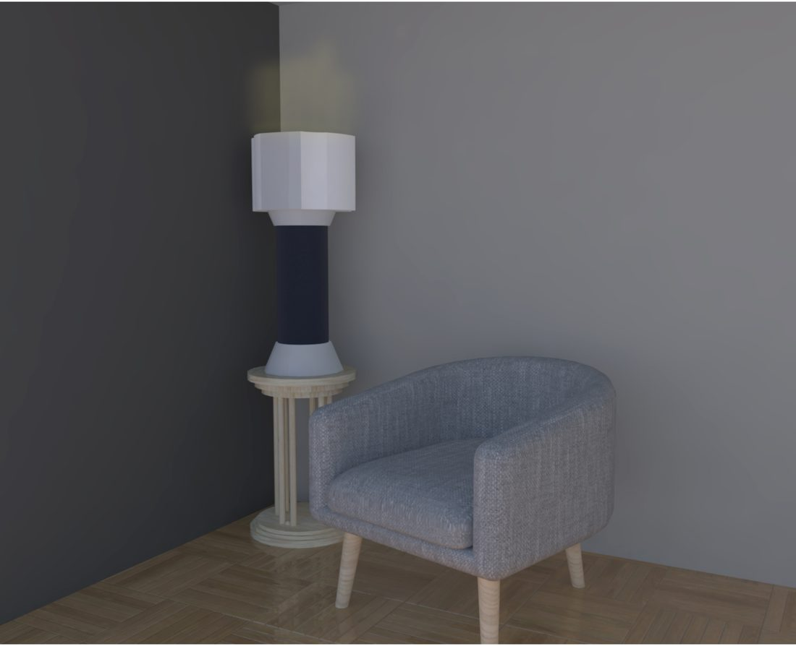

Orba
Concevoir un objet lumineux de A à Z — entre design, micro-architecture et jeu d'ombres.
Contexte
Orba est une série de luminaires monoblocs à la géométrie sculpturale. Les volumes sont construits par facettage, avec des pliages nets qui renforcent la présence de l'objet dans l'espace. Chaque lampe est pensée comme une structure autonome, entre stabilité et élévation.
Concevoir ces luminaires m'a permis de créer un objet de A à Z, en m'appuyant sur un concept fort et sur un mobilier existant : la Panton Chair, dont j'ai retenu les formes organiques et le caractère empilable.
La démarche
Des facettes qui sculptent la lumière
Les facettes ne sont pas décoratives : elles orientent la lumière et sculptent des zones d'ombre marquées. La singularité d'Orba réside dans la tension entre objet lumineux et micro-architecture intérieure.
Trois modèles
- Orba Stra — structure ouverte, base large, silhouette étalée : stabilité et stratification.
- Orba Lina — forme axiale, symétrique, élancée : un objet pur, presque totémique.
- Orba Vorn — compacte, repliée, anguleuse : dense et affirmée, comme taillée dans la masse.
Déclinaisons
Trois finitions colorées ont été imaginées (bleu foncé, blanc, rouge) : couleur intégrale, contraste haut/bas, ou couleur sur le seul tube central pour accentuer la verticalité.
Recherche
Des croquis de formes organiques à la définition des trois modèles.


Les trois modèles
Orba Stra, Lina et Vorn — trois caractères, une même famille.



Résultat
Les luminaires mis en lumière, en ambiance.


Nature du projet Projet de design d'objet. Images : croquis, modèles et rendus 3D.